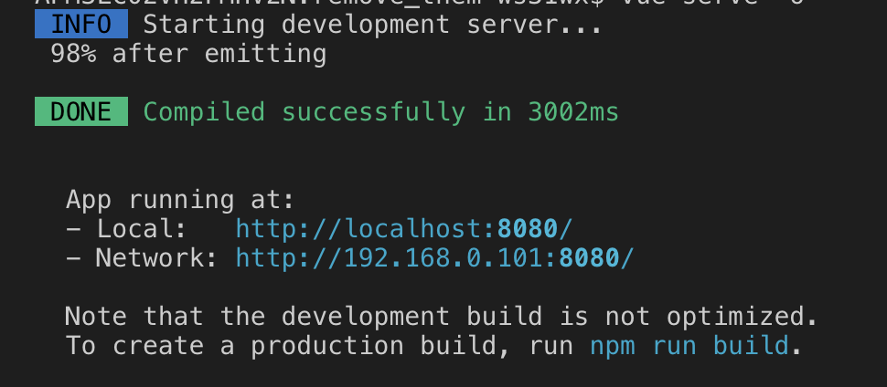

Generating a Vue application with vue-cli 3
Vue cli is a professional project generator for VueJS. It allows:
- to instant prototype with zero configuration
- to create a project which:
- can be run in development mode
- can be build to different artifacts with
vue build- application
- vue component
- web component
- a bundle of web components
- allows allows fully customisation (no eject is required)
Notes:
Vue CLI requires Node.js version 8.9 or above (8.11.0+ recommended)
In this material I am going to use vue cli version is 3.x
Instant prototyping
You just have an idea and you want to quickly materialize it, vue cli instant prototyping is the tool you need.
What is needed? The packages below has to be installed globally.
- @vue/cli
- @vue/cli-service-global
How to prototype a vue application?
- Install the aforementioned packages globally with the following commands:
$ npm i -g @vue/cli
$ npm i -g @vue/cli-service-global
- Check their installation:
$ vue --version
On my machine the outcome of the command is 3.8.4
- Create a file
App.vue
<template>
<h1>Hello!</h1>
</template>
- run the command:
$ vue serve -o
This starts a development server and install (serve) the App.vue vuejs application and (because of -o command argument) opens the default browser pointing to http://localhost:8080.
If all goes fine the Hello message is displayed in the console/terminal.

and the Hello! message is displayed in the browser opened tab.
Notes:
In case the cli-service-global not installed globally a warn is issued when run
vue serve
Command vue serve requires a global addon to be installed. Please run npm install -g @vue/cli-service-global and try again.
The vue serve uses the same default setup as projects created by vue create
When running vue serve it automatically infers the entry file in the current directory - which can be one of main.js, index.js, App.vue or app.vue
If serving another file, say MyProtoComponent.vue, is wanted, the following command can be used.
$ vue serve MyProtoComponent.vue -o
Build for production
Vue cli allows to build for production with zero configuration.
I really recommend to create a project with vue create command when the intention is to go for production but instant prototyping allows to build vue js artifact for production with zero customization.
The command is
$ vue build
To see what command options are available you could run vue build --help
One of the main option is the target of the build wich means what type of artifact the command will produce.
There are the following options for target.
- app - which is the default
- lib - produce a vue component
- wc - produce a Web Component
- wc-async - producing a bundle of Web Components
Example here with Web Component artifact
Create a new project
TBD